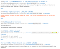

The satoshi is currently the smallest unit of the bitcoin currency recorded on the block chain. (1.1) It is a one hundred millionth of a single bitcoin (0.00000001 BTC). (1.1) The unit has been named in collective homage to the original creator of Bitcoin, Satoshi Nakamoto.
{kind=link}
All amounts in the block chain are denominated in satoshi before being converted for display. (1.2) The source code also uses satoshi when specifying an amount of bitcoin. When displaying an extremely fine fraction of a bitcoin, as in a contemporary ?faucet, the amount is displayed in satoshi for readability. (1.3)
As of August 2015, 1 US cent is worth approximately 4400 satoshi.
History
The value of a bitcoin in satoshi was decided by Satoshi Nakamoto to be 100 million no later than November 2008. (2.1)
On November 15, 2010, ?ribuck proposed that the one hundredth of a bitcoin (0.01 BTC) be called a Satoshi. (2.2) Four months later he instead suggested that the one hundred millionth unit be called an austrian or a satoshi. (2.3) The name satoshi caught on, and was widely adopted thereafter. (2.4)
Usage
Plural
Traditionally, the plural form has been simply satoshi, (4.1) but the term satoshis is also very prevalent. If the plural form were to follow the rules of Japanese grammar, it may be pronounced as satoshi, (4.2) or satoshisa. (4.2)
Symbol
Satoshi is sometimes abbreviated to sat or s, although no symbol has been widely adopted.
The Japanese character シ ("shi") has been proposed as a potential currency symbol for the satoshi. (5.1) The Katakana symbol サ ("sa") has also been proposed, as it looks more reminiscent of a currency symbol. (5.2) (5.3) The circled shi (㋛) has been suggested to disambiguate the symbol from the character, (5.4) (5.5) as it is synonymous with death. (5.6) (5.7) Additionally, the Hiragana shi (し) is a suggestion. (5.7) (5.8)
References
1.1: What is a 'Satoshi'? - Bitcoin Stack Exchange
1.2: 11 October 2014 Id: 819656
1.3: Do These "Free Bitcoin" Sites Work? Barnes, Samuel 9 April 2014 Work: ?CryptoCoinsNews
2.1: 23 December 2013 Id: 382374
2.2: 14 July 2010 Id: 369 Post: 22160
2.3: 10 February 2011 Id: 3311 Post: 46648
2.4: 9 January 2014 Id: 407422 Post: 4415850
4.1: Bitcoin Wiki revision by theymos
4.2: 9 September 2013 Id: 289475 Post: 3112861
5.1: 24 July 2015 Id: 3egrjk R: Bitcoin
5.2: 24 July 2015 Id: 3egrjk Post: https://www.reddit.com/r/Bitcoin/comments/3egrjk/satoshi_symbol/ctezrh5 R: Bitcoin
5.3: 24 July 2015 Id: 3egrjk Post: https://www.reddit.com/r/Bitcoin/comments/3egrjk/satoshi_symbol/ctf1j9b R: Bitcoin
5.4: 24 July 2015 Id: 3egrjk Post: https://www.reddit.com/r/Bitcoin/comments/3egrjk/satoshi_symbol/cteue94 R: Bitcoin
5.5: 24 July 2015 Id: 3egrjk Post: https://www.reddit.com/r/Bitcoin/comments/3egrjk/satoshi_symbol/cteue94 R: Bitcoin
5.6: 24 July 2015 Id: 3egrjk Post: https://www.reddit.com/r/Bitcoin/comments/3egrjk/satoshi_symbol/ctfj7yo R: Bitcoin
5.7: 24 July 2015 Id: 3egrjk Post: https://www.reddit.com/r/Bitcoin/comments/3egrjk/satoshi_symbol/ctf6pvd R: Bitcoin
5.8: 24 July 2015 Id: 3egrjk Post: https://www.reddit.com/r/Bitcoin/comments/3egrjk/satoshi_symbol/ctf7e09 R: Bitcoin